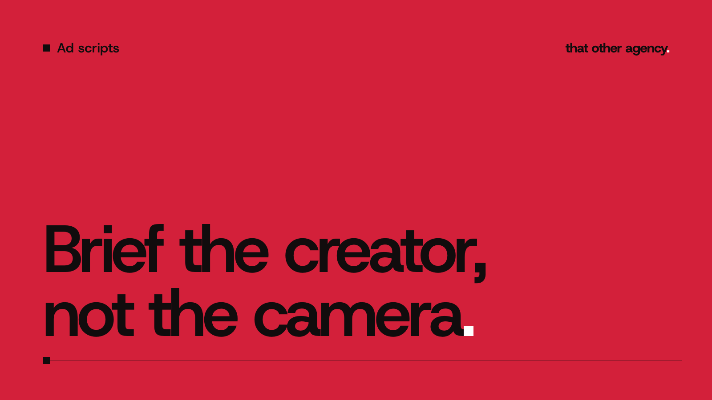

Ad scripts
UGC Brief Template UK: How to Brief Creators, With a Free Script Brief

Most disappointing UGC videos are not the creator's fault. They come from a brief that was either a vague paragraph ("just be natural!") or a word for word script nobody could say out loud. This guide gives you a UGC brief template UK brands can copy today, explains what goes in each part, and covers the UK specifics people forget: ad labels, claims you can back up, and usage rights.
Why the brief matters more than the creator
Creators are good at sounding like a real person. They are not mind readers. If the brief does not say who the customer is or what the single point of the video is, you get a pleasant unboxing that sells nothing. If the brief is a rigid script, you get a real person sounding like an advert, which is the one thing UGC is meant to avoid. The fix sits in the middle: a structure to follow, in talking points the creator puts into their own words.
The UGC brief template UK brands can copy
Copy this into a document and fill in the brackets. Keep it to a page.
- The product in one line. "[Product] is a [what it is] for [who] who [problem]."
- Who is watching. "The viewer is [age range, situation]. They already [what they have tried] and are fed up because [reason]."
- The one job of this video. "By the end, the viewer should believe [single idea]." One idea only.
- Hooks to film. Three to five opening lines for the first three seconds. Film each one as a separate take.
- Talking points. Three or four bullet points, in customer words, that the creator covers in their own way.
- Must say. Anything that has to be exact, such as the product name, the offer or a claim you have evidence for.
- Do not say. Claims you cannot prove, competitor names, prices that may change, and any words your category is not allowed to use.
- Show, do not tell. The two or three shots that prove the point: the product in use, a before and after you can stand behind, the texture or the size in hand.
- The ask. One action at the end, such as "Tap the link and try the starter set".
- What to send back. Format, length, number of versions and the deadline (see below).
Talking points, not a script
Here is the difference. A scripted line reads: "Our innovative formula delivers long lasting comfort." A talking point reads: "Say how it feels after a full day at work, compared with what you used before." The second one gives the creator something real to talk about, and it comes out in their voice.
Lift the talking points from your own reviews, support emails and returns notes. The phrases customers use are usually better than anything a copywriter invents. If you have a founder video ad script that already works, its problem and proof sections make a good starting point for creator talking points.
The UK rules to put in the brief
- Back up every claim. UK advertising rules expect you to hold evidence for objective claims before the ad runs. If you cannot prove "lasts all day", it goes in the "do not say" list, however natural it sounds when a creator says it.
- Label it as an ad when the creator posts it. If the deal includes the creator posting on their own account, the ASA and CMA expect it to be clearly marked as an ad from the start, for example with "#ad" up front rather than buried in hashtags. Say so in the brief so nobody is surprised.
- Watch category words. Food, supplements, cosmetics and anything health related have extra limits on what you can say. If you sell in one of these, list the banned words plainly.
This is a brief, not legal advice. If your category is tightly regulated, check your claims with the ASA's own guidance first.
Usage rights and paid ads
Agree this before filming, in writing, and put a short summary in the brief so both sides read it.
- Where you can use it. Organic social only, paid ads, your website, email, or all of these.
- For how long. A fixed period is common, often a few months to a year, with an option to extend.
- Running ads from their account. Meta and TikTok both let brands run ads through a creator's handle with their permission. That needs separate agreement and access, so say if you want it.
- Edits. Whether you can cut the footage, add captions, swap the hook or mix it with other clips. For testing, you want all of these.
What to ask for back
- Vertical video (9:16), filmed in good daylight, with the phone at eye level.
- Every hook as its own clip, plus the main body as a separate clip, so you can pair any hook with the body.
- No burnt in captions or music. You will add your own, and clean files are easier to edit.
- A few seconds of product close ups to use as cutaways.
- One round of changes agreed up front, with what counts as a change.
- A clear deadline and how files are sent, such as a shared folder link.
Common briefing mistakes
- Too many messages. One video, one idea. Save the second idea for the second creator.
- No hooks. The first three seconds decide whether anyone watches. Ask for several and let the results choose.
- Sending the product late. Give creators time to actually use it. Honest first impressions after a week beat forced ones after an hour.
How we help with creator briefs
Our ad script system builds the thinking that sits behind a good brief: a creative bible from your reviews, competitors and past ads, hooks and talking points checked against the proof you hold, and scripts and briefs that founders and creators can film. Every project starts with a consultation and a fixed quote.
Frequently asked questions
Should I give a UGC creator a full script?
Usually not. Give them hooks, talking points and the few lines that must be exact. A full script tends to make creators sound like actors reading an advert, which defeats the point.
How long should a UGC brief be?
One page. If it runs longer, the creator will skim it and miss the part that matters. Put contracts and payment terms in a separate agreement.
Do UGC ads need #ad if the brand posts them?
When the video runs from your own brand account as a paid ad, it already appears as sponsored. The labelling question mainly applies when the creator posts it on their own account as part of a deal, and then it should be clearly marked as an ad.